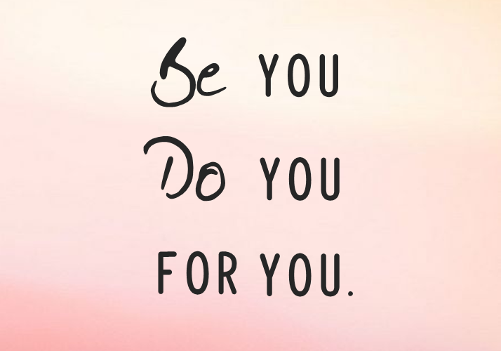

B You Designs
Ben jij opzoek naar een webdesign bureau voor custom designs.
Dan is B You Designs de juiste partner voor jou!
- 
Maatwerk websites met uniek design en complexe functionaliteiten
Een verbluffende indruk achterlaten bij jouw collega's, partners, leveranciers en stakeholders? Met een maatwerk website van B You Designs brengen wij het beste uit jouw organisatie naar voren. Je website is vaak je eerste touch point in de customer journey en verdiend daarom de nodige tijd en aandacht. Wij helpen je hier graag mee.
Waarom B You Designs??
- Professioneel maatwerk voor iedere organisatie
- Meedenken vanaf dag 1 met het inrichten van je online bedrijfsprocessen
- een passend design door onze pixelsmids
- Javascript, CSS, HTML, API's en PYTHON codemasters bouwen het voor je
- Mobile responsive:je website werkt op elk apparaat
- Zoekmachine vriendelijk:snelle laadtijden en betere veilighed